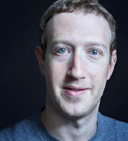

- Frédéric Arnault
- Jean Arnault
Chairman And CEO, LVMH Moët Hennessy Louis Vuitton
$198.1B
$3.9B (2.00%)
Real Time Net Worth
as of 6/25/24#3 in the world today
$233B
2024 Billionaires Net Worth
as of 4/2/24
About Bernard Arnault & family
Bernard Arnault oversees the LVMH empire of 75 fashion and cosmetics brands, including Louis Vuitton and Sephora.
LVMH American jeweler Tiffany & Co in 2021 for $15.8 billion, believed to be the biggest luxury brand acquisition ever.
Arnault's holding company Agache backs venture capital firm Aglaé Ventures, which has investments in businesses such as Netflix and TikTok parent company ByteDance.
His father made a small fortune in construction; Arnault got his start by putting up $15 million from that business to buy Christian Dior in 1984.
Arnault's five children all work at LVMH; in July 2022, he proposed a reorganization of his holding company Agache to give them equal stakes.

- Erro Musk-father
- Mayu Musk-Mother
- Exa Dark Sideræl (nicknamed Y)
- Techno Mechanicus
- twins Griffin and Vivian
- triplets Kai, Saxon and Damian
childrens
CEO, Tesla
$212.8B
$242M (0.11%)
Real Time Net Worth
as of 6/25/24#1 in the world today
$195B
2024 Billionaires Net Worth
as of 4/2/24
About Elon Musk
Elon Musk cofounded six companies, including electric car maker Tesla, rocket producer SpaceX and tunneling startup Boring Company.
He owns about 12% of Tesla excluding options, but has pledged more than half his shares as collateral for personal loans of up to $3.5 billion.
In early 2024, a Delaware judge voided Musk's 2018 deal to receive options equaling an additional 9% of Tesla. Forbes has discounted the options by 50% pending Musk's appeal.
SpaceX, founded in 2002, is worth nearly $180 billion after a December 2023 tender offer of up to $750 million; SpaceX stock has quintupled its value in four years.
Musk bought Twitter in 2022 for $44 billion, after later trying to back out of the deal. He owns an estimated 74% of the company, now called X.
Forbes estimates that Musk's stake in X is now worth nearly 70% less than he paid for it based on investor Fidelity's valuation of the company as of December 2023.

- MacKenzie Scott
- Lauren Sánchez
Chairman And Founder, Amazon
$203B
$3.3B (1.59%)
Real Time Net Worth,
as of 6/25/24#2 in the world today
$194B
2024 Billionaires Net Worth
as of 4/2/24
About Jeff Bezos
- Prillain chal
- Maxima Chan Zuckerberg.
- August Chan Zuckerberg.
- Aurelia Chan Zuckerberg.
Childrens

CEO, Tesla
$212.8B
$242M (0.11%)
Real Time Net Worth
as of 6/25/24#1 in the world today
$195B
2024 Billionaires Net Worth
as of 4/2/24
About Elon Musk
Elon Musk cofounded six companies, including electric car maker Tesla, rocket producer SpaceX and tunneling startup Boring Company.
He owns about 12% of Tesla excluding options, but has pledged more than half his shares as collateral for personal loans of up to $3.5 billion.
In early 2024, a Delaware judge voided Musk's 2018 deal to receive options equaling an additional 9% of Tesla. Forbes has discounted the options by 50% pending Musk's appeal.
SpaceX, founded in 2002, is worth nearly $180 billion after a December 2023 tender offer of up to $750 million; SpaceX stock has quintupled its value in four years.
Musk bought Twitter in 2022 for $44 billion, after later trying to back out of the deal. He owns an estimated 74% of the company, now called X.
Forbes estimates that Musk's stake in X is now worth nearly 70% less than he paid for it based on investor Fidelity's valuation of the company as of December 2023.
- Larry Ellison
Larry Ellison
- David
- Craft
CTO And Founder, Oracle
$170.9B
$1.8B (1.02%)
Real Time Net Worth
as of 6/25/24#5 in the world today
$141B
2024 Billionaires Net Worth
as of 4/2/24
About Larry Ellison
Larry Ellison is chairman, chief technology officer and cofounder of software giant Oracle, of which he owns just under 40%.
He gave up the Oracle CEO role in 2014 after 37 years at the helm.
Oracle has grown in part through steady acquisitions of software companies: the biggest was $28.3 billion for electronic health records company Cerner in 2021.
In 2020, Ellison moved permanently to the Hawaiian island Lanai, which he bought nearly all of in 2012 for $300 million.
Ellison sat on Tesla's board from December 2018 to August 2022. He still owns about 15 million shares in the electric carmaker.